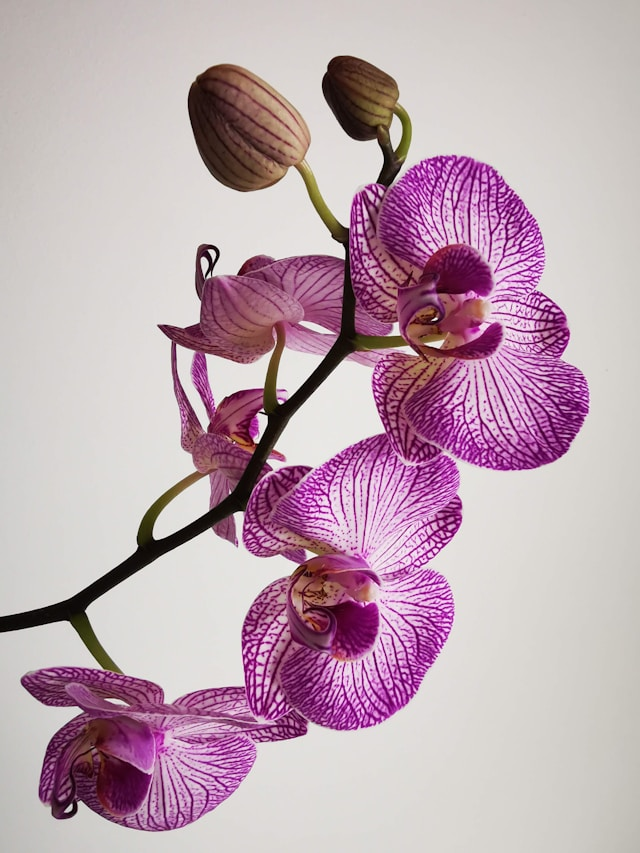
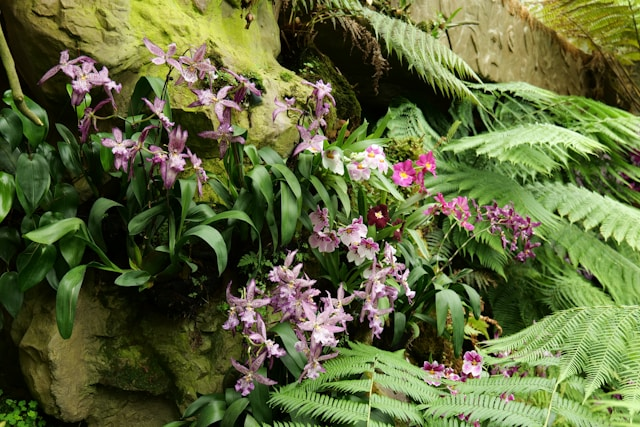
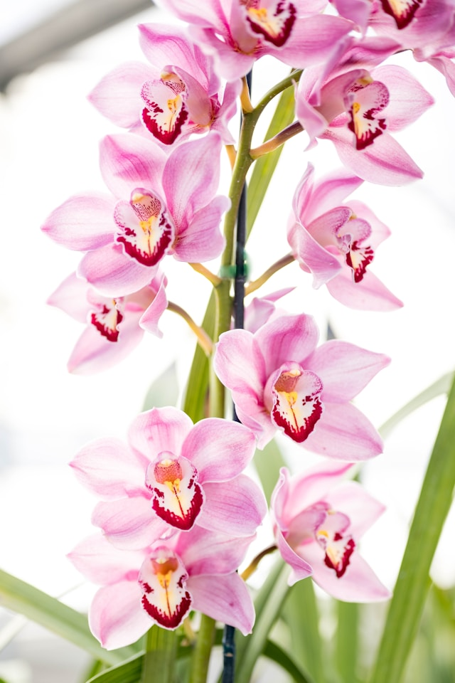
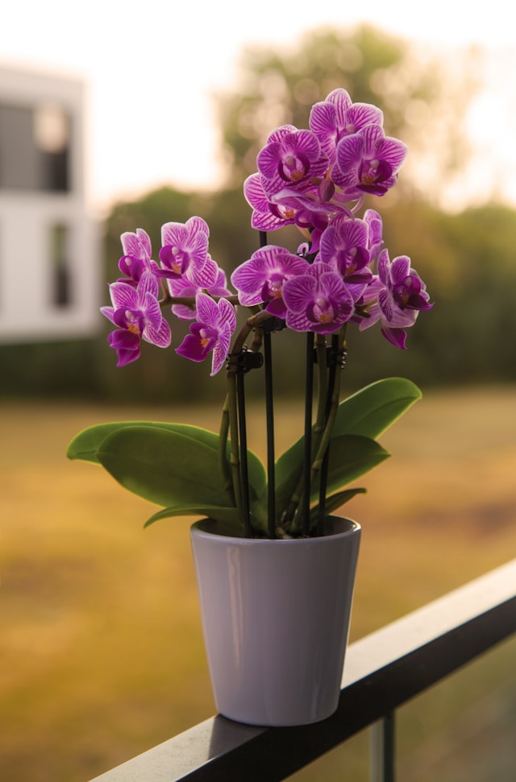

In all shapes and forms
In the Orchid family, there exist an estimate of 25,000 species. They are clearly distinguishable by their highly complex flowers. They usually consist of a base of three petals, one upper and two accompanying ones on the sides, thus forming a triangle.

The flower and its tree: a relationship of dependency
How to take better care of your Orchid
To provide an adequate environment for orchids to flourish, they need bright indirect light. Direct sunlight should be avoided as it can burn their leaves. Typically, in their natural habitat, they are found in forests and jungles, which is why humidity is also an important factor.

